01🌾
Făină de la moară
De la o moară din raionul Glodeni, din grâu local.
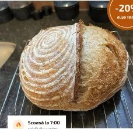
-20%după 18:00Frământăm manual din făină de grâu moldovenesc, măcinată la piatră. Fermentăm aluatul 24 de ore, fără drojdie industrială și fără aditivi.
Fiecare pâine trece prin mâinile brutarului de cel puțin cinci ori.
De la o moară din raionul Glodeni, din grâu local.
Aceeași cultură vie, hrănită zilnic din 2017.
Coajă crocantă și miez umed, ca la țară.
Sortimentul se schimbă ușor de la o zi la alta, după sezon.
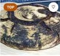
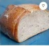
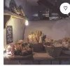
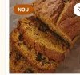
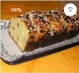
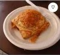
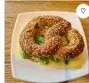
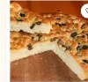
Pâinea cu maia ține proaspătă pentru zile. De când am cumpărat de aici, nu mai iau pâine de la supermarket.
Cozonacul de Paști a fost exact ca cel de la mama! Am comandat deja trei pentru Crăciun.
Copiii vin după corigi în fiecare dimineață, înainte de școală.
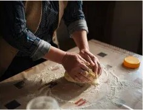
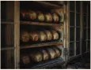
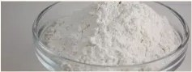
Comenzile pentru a doua zi se primesc până la ora 17:00.